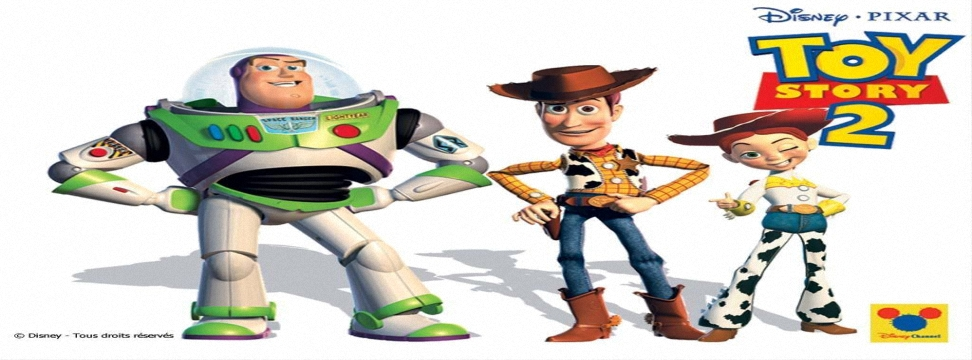

玩具總動員2(Toy Story2)
1999年11月24日,
2010年2月12日（3D立體版）

【片長時間】 約９２分鐘
【作品類別】 迪士尼/皮克斯動畫，長篇劇情動畫片
【原著取材】原由迪士尼電腦動畫【玩具總動員】衍生劇情
【內容介紹】本片與【玩具總動員】一樣是由迪士尼與ＰＩＸＡＲ公司共同製作，也是全以電腦動畫呈現。
本片內容及人物都接續【玩具總動員】，敘述玩具們的小主人 Andy 去參加夏令營了，不料玩具警長 Woody 卻在此時被一個瘋狂的玩具收藏家搶走，原來隨著復古風潮的盛行，玩具警長居然在市場上走紅起來，成為玩具收藏家的最愛，在 Andy 家吃鱉好一段時間的 Woody 當然也因此風光起來，跩得不得了！原本是 Woody 死對頭的太空人 Buzz 和其他玩具們花了好多心力才讓 Woody 回到家中並且恢復正常，了解自己到底是誰。
有１９９５年第一集成功的壓力，本片導演 John Lasseter 十分堅持續集的故事、人物必須更為有趣才行，所以在【玩具總動員２】中，故事重心擺在描寫玩具被主人拋棄時的心路歷程，因此創造出女牛仔 Jessie 這個新角色。片中許多創意橋段的設計更是讓人會心一笑，營造出更勝第一集的精采內容，在美票房突破兩億，更拿下金球獎喜劇類最佳劇情片。本片與第一集於２０１０年４月推出３Ｄ立體版於特別設備的電影院重映。